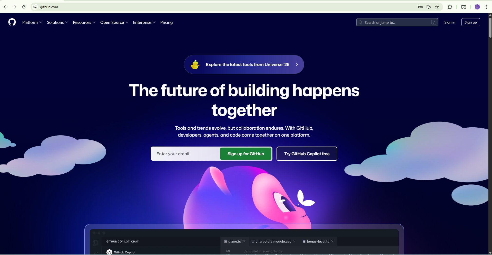

Cytometry in R: A Course for Beginners
Cytometry in R is a free virtual mini-course being organized by the Flow Cytometry Shared Resource core at the University of Maryland’s Greenebaum Comprehensive Cancer Center. This course is a passion project arising from our desire to contribute back to the community. We are excited that you have chosen to take part and look forward to helping you get started on your own learning journey.
Course materials can be found here or via the Course tab in the navigation bar. The livestream recordings are available via YouTube
Pre-Course Walkthroughs

Week 0: January 26, 2026 In these pre-course walk-throughs, we ensure that everyone creates a GitHub account, and has their computer properly set up with the required software (including R, Positron, and Git). We then start to build individual participants familiarity with the software infrastructure that they will be using throughout the rest of the course.
Installing R Packages

Week 1: February 2, 2026 During this first session, we learn how to install R packages from the various repositories (CRAN, Bioconductor, GitHub), and how to troubleshoot the more typical errors that occur during this process.
File Paths

Week 2: February 9, 2026 For this second session, we focus on how to programmatically tell your computer where to locate your experimental files, introducing the concept of file paths. We explore how the various operating systems (Linux, MacOS, Windows) specify their respective folders and files, and how to identify where you are currently within the directory. Our goal by the end of this session is to have walked you through how to figure out where an .fcs file of interest is stored, and convey to your computer where you want it copied/moved to, without encountering the common pitfalls.
Inside an .FCS file

Week 3: February 16, 2026 In the course of this third session we will slice into an .FCS file and find out what the individual components that make it up are. In the process, we will cover the concepts of main data structures within R (vectors, matrices, data.frames, list) and how to identify what we are working with. Additionally, we will explore how various cytometry softwares store their metadata variables under various keywords that can be useful to know about.
Introduction to the Tidyverse

Week 4: February 23, 2026 Within this fourth session, we explore how the various tidyverse packages can be utilized to reorganize rows and columns of data in ways that are useful for data analysis. We will primarily work with the MFI expression data we isolated from within the .fcs file in the previous session, identifying and isolating events that meet certain criterias. We introduce the concepts behind “tidy” data and how it can improve our workflows.
Gating Sets

Week 5: March 2, 2026 As part of this fifth session, we learn about the two main flow cytometry infrastructure packages in R we will be working with during the course, flowcore and flowWorkspace. Throughout the session, we will compare how they differ in naming, memory usage, and accessing .fcs file metadata. We additionally explore how to add keywords to their respective metadata for use in filtering specimens of interest from the larger set of .fcs files.
Visualizing with ggplot2

Week 6: March 16, 2026 During this sixth session we provide an introduction to the ggplot2 package. We will take the datasets we have collected from the previous sessions and see how in varying in different arguments at the respective plot layers we can produce and customize many different forms of plots, focusing on both cytometry and statistics plots. We close out providing links to additional helpful resources and highlight the TidyTuesday project.
Applying Transformations

Week 7: March 23, 2026 For this seventh session, we take a closer look at the raw values of the data within our .fcs files, and explore the various ways to transform (ie. scale) flow cytometry data in R to better visualize “positive” and “negative populations”. In the process, we visualize the differences resulting from applying different transformations commonly used by commercial software.
Conference Break 1
No class week of March 30, 2026. If you are attending the ABRF conference, track me down at the Complex Data Analysis in Flow Cytometry: Navigating the Landscape talk on Monday, March 30th at 4:30 PM.
Manual and Automated Gating

Week 8: April 6, 2026 Within this eight session, we explore various ways to implement gating for flow cytometry files in R. We will explore manual approaches utilizing flowGate, as well as automated options with openCyto and it’s gating templates. We additionally will explore how to provide gate constraints and various ways to visually screen and evaluate the outcomes within the context of our own projects.
It’s Raining Functions!

Week 9: April 13, 2026 In the course of this ninth session, we tackle one of the harder but most useful concepts to learn for a beginner, namely functions. We explore what they are, how their individual arguments work, how they differ from for-loops, and how to create our own to do useful work, reduce the number times code gets copied and pasted. Additionally, some functional programming best practices will be introduced, as well as provide introduction to how to use the walk and map functions from the purrr package.
Downsampling and Concatenation

Week 10: April 20, 2026 Within this session, we will expand on our growing understanding of GatingSets, functions and fcs file internals to write a script to downsample your fcs files to a desired number (or percentage) of cells for a given cell population. We will additionally learn how to concatenate these downsampled files together, and save them to a new .fcs file in ways that the metadata can be read by commercial software without the scaling being widely thrown off.
Retrieving data for Statistics

Week 11: April 27, 2026 Leveraging the increased familiarity working with the various packages this far in the course, in this session we will retrieve summary statistics for the gates within our GatingSet, and programmatically derrive out tidy data.frames for use in statistical analyses typically used by many Immunologist. In the process, we add a couple additional plot types to our ggplot2 arsenal to hold in reserve should Prism prices go up again.
Spectral Signatures

Week 12: As part of this session, we will explore how to extract fluorescent signatures from our raw spectral flow cytometry reference controls. Building on prior concepts, we will learn to isolate median signatures from positive and negative gates, and how to derrive and plot normalized signatures. We also introduce plotly package and it’s interactive plotting features, before showcasing various packages attempts at facilitating signature retrieval.
Similarities and Hotspots

Week 13: During this session, we will utilize the spectral signature matrix isolated from raw spectral flow cytometry controls and evaluate different ways of evaluating how similar different fluorescent signatures are to each other. In the process, we will gain better understanding of the metrics behind similarity (cosine), panel complexity (kappa), and unmixing-dependent spreading (collinearity).
Unmixing in R

Week 14: In the course of this session, we will attempt a reach goal of many, namely carry out unmixing of raw .fcs files using the spectral signatures we have isolated from our unmixing controls, and write to new .fcs files. After evaluating the necessary internals, we will explore how various current cytometry R packages have implemented their own unmixing functions, and the various limitations that each approach has encountered.
Cleaning Algorithms

Week 15: In the span of this session, we will directly compare how various Bioconductor data cleanup algorithms (namely PeacoQC, FlowAI, FlowCut, and FlowClean) tackle distinguishing and removing bad quality events. We will see how they perform with previously identified good quality and horrific quality .fcs files. We will whether the implemented algorithmic decisions made sense, and how to customize them within our workflows to achieve our own desired goals.
Clustering Algorithms

Week 16: As part of this session, we venture away from supervised and semi-supervised analyses to explore unsupervised clustering approaches, namely FlowSOM and Phenograph. We will compare outcomes depending markers included, transformations applied, and panel used to gain a greater familiarity with how they work. We wrap up by investigating ways to visualize marker expression of cells ending up in each cluster, and how to backgate them to our manual gates.
Conference Break 2
No class week of June 8, 2026. If you are attending the Cyto conference, track me down at my talks (Open-Source automation on June 7, 10:30-11:30AM at Grand Ballroom; and Semi-supervised pipeline on June 9, 10:30-11:45AM atRoom 2DEF) or poster (grab some Cytometry in R course hex stickers!)
Normalization: Batch Effect or Real Biology

Week 17: During this session, we will dive into evaluating the performance of two commonly used normalization algorithms, CytoNorm and CyCombine. We will utilize our ggplot2 and functional programming toolkits to create a customized workflow to visualize the differences for our respective cell populations before and after normalization, to better evaluate how the respective parameter choices can affect the process.
Dimensionality Visualization

Week 18: For this session, we explore how dimensionality visualization algorithms perform tSNE and UMAP in R using our raw and unmixed samples. In the process, we will explore how markers included, number of cells, and presence of bad quality events can impact the final visualizations. Finally, we will provide an overview of how to link to Python to additionally run PaCMAP and PHATE visualizations for use in R.
Annotating Unsupervised Clusters

Week 19: In the course of this session, we explore ways to scale our efficiency in figuring out what an unsupervised cluster of cells may be, by employing several annotation packages. We explore how these work under the hood in their decision making process, and how to link them to reference data from external repositories for additional evaluation.
The Art of GitHub Diving

Week 20: Within this session, we delve into the art of investigating a new-to-you GitHub repository. We discuss the overall structure of R packages stored as source files within GitHub repositories, and how to leverage this knowledge when troubleshooting errors thrown by underdocumented R packages. We discuss how to modify identified functions, evaluate them, and process to submit helpful bug reports back to the original project to help fix the issue.
XML Files All The Way Down

Week 21: Breaking news alert, most of the experiment templates and worksheet layouts we work with as cytometrist are .xml files. In this session, we learn some additional coding tools to allow us to work with these types of files to extract useful data. In this session, we test out our new problem solving abilities to retrieve data from SpectroFlo and Diva .xml files to monitor how our core’s flow cytometers behaved for various users last week.
Utilizing Bioconductor packages

Week 22: Many of the R packages for Flow Cytometry we have utilized in this course were packages from the Bioconductor project. We take a look at what makes Bioconductor packages unique compared to packages found on GitHub and CRAN, explore some of their specific infrastructure types for flow cytometry data, and highlight some useful packages for downstream analysis that we haven’t had time to properly explore.
Building your First R package

Week 23: For most of the course, we have been working with R packages that other individuals built and maintained. In this session, we leverage all your hard work from the rest of the course and corral the unwieldly arsenal of functions you wrote into your first R package for easier use. We will discuss the individual pieces of an R package, the importance of a well-setup namespace file, and how to generate help page manuals to refer future-you back to what your individual function arguments actually do.
Everyone Get’s a Quarto Website

Week 24: In this session, we will extend the knowledge of .R and .qmd files you have gained from the course and extend them to create your own website using Quarto. We discuss the additional files that are required, how to customize and render the website locally, and finally set up Quarto Pub or GitHub Pages website that we are to access online.
Conference Break 3
No class week of August 10, 2026. If you are attending the BioC conference, track me down at my talk/poster.
Reproducibility and Replicability

Week 25: Throughout the course, we emphasized the importance of making your workspaces and code reproducible and replicable. But what do we mean by these terms, and are there best practices we could add to our existing workflow to do this more efficiently? We explore a couple community-led efforts within the cytometry space and troubleshoot their implementation into a previously published pipeline.
Open Source Licenses
&v=1365581685114.png)
Week 26: For this course, we have relied extensively on open-source software to create our own data analysis pipelines. In the process, you may have some recollection of the various license names. But what impact do all these different names have in the end? We take a brief deep-dive into the ecosystem of free and open-source licenses, and evaluate what their respective license terms mean for us as individual users of the code, as well as potential developers extending existing codebases.
Validating Algorthmic Tools

Week 27: We will be the first to admit, new implementations of algorithms as R packages are awesome! We appreciate the effort that went into them and making them available to the community at large. But what is the best way of evaluating whether they behave as promised, or work for our dataset? During this session, we share tips and tricks to gain better understanding of how a new R package works, and things to watch out for when evaluating complicated algortithms. We wrap with walkthrough of how to generate simulated datasets with known distributions for use in testing.
Databases and Repositories

Week 28: During this session, we will learn how to identify and retrieve .fcs files from databases. While many of us are accustomed to working with large datasets of our own making, many of us are increasingly encountering larger-than-memory datasets, as well as files stored in large repositories. In this session, we will explore several database focused R packages, before investigating how to identify and retrieve .fcs files and associated metadata of interest from repositories, namely ImmPort (and maybe FlowRepository if it can be pinged that afternoon).
Assembling Web Data

Week 29: In this session, we briefly delve into the concepts of web-scraping and APIs in general. We highlight useful packages, namely httr2 and rvest, and best practices implemented to allow respectful retrieval of useful data without crashing someone’s server like some AI startup bot. We finish by providing a list of additional useful resources for those interested in learning more.
Future Directions

Week 30: In this final of the planned sessions, we revisit our solutions to the challenge problems set out during the beginning of the course. We also discuss potential future topics to visit in the future, and any additional resources that proved helpful throughout the course.